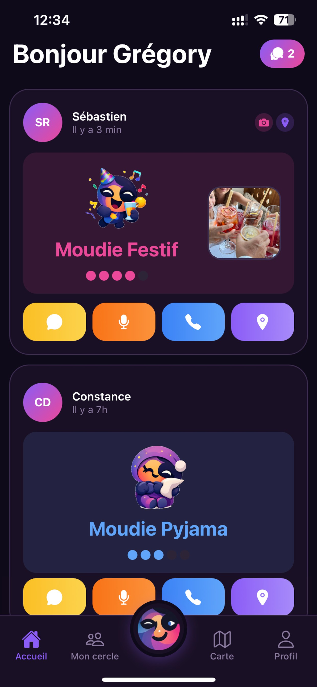
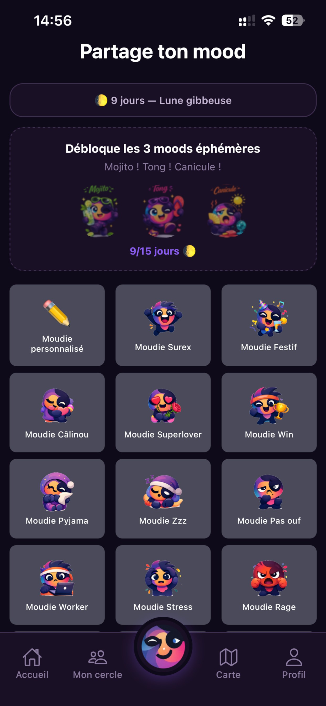
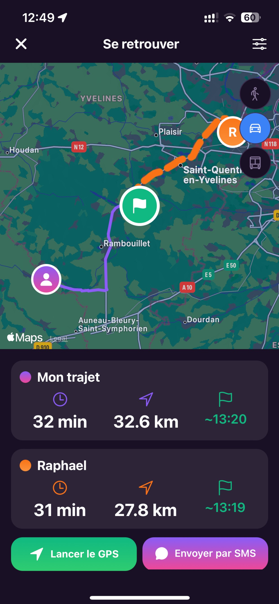
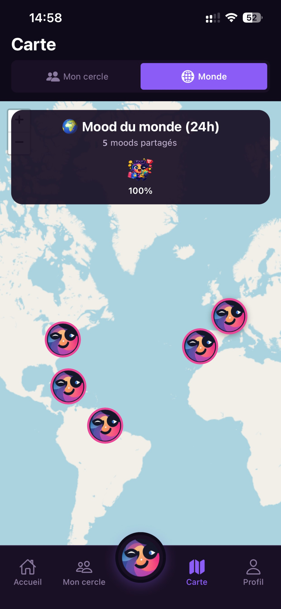
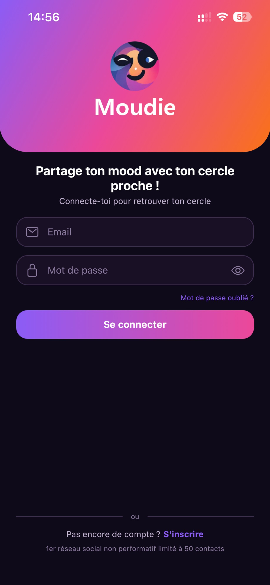
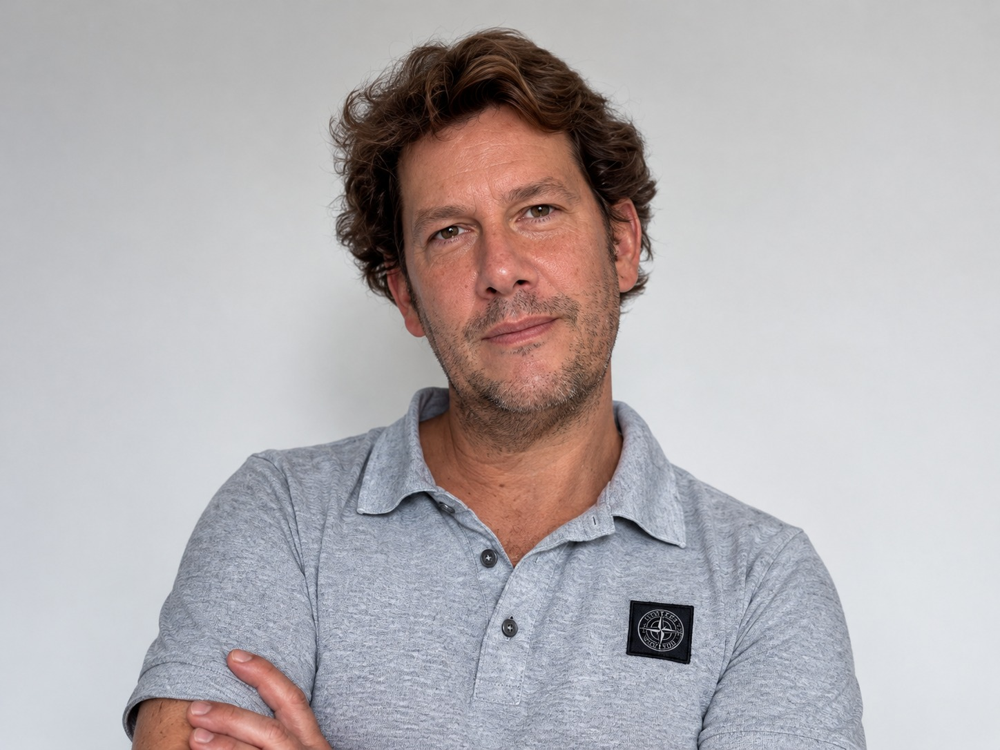

Moudie en bref
Une application mobile pour partager son humeur du jour avec ses proches, puis se retrouver en vrai.
Pas de likes à collectionner, pas d'inconnus, pas de mise en scène : on choisit une humeur, on ajoute un selfie si on en a envie, et on la partage avec un cercle de 50 personnes au maximum. Avec la fonction « Se retrouver », un proche qui passe dans le coin peut nous rejoindre grâce à l'itinéraire.
Conçue et développée en France par Grégory Delaroche-Vernet, père de quatre enfants, Moudie est disponible gratuitement sur l'App Store et Google Play.
L'application en images
Captures d'écran de l'application iOS, en haute définition. Cliquez sur une capture pour la télécharger.


L'accueilLes humeurs de ses proches et leur intensité.

Partager son mood32 humeurs, une personnalisée, des moods éphémères.

Se retrouverUn point de rendez-vous et le trajet de chacun.

Le mood du mondeLes humeurs partagées dans les dernières 24 heures.

BienvenueLe 1er réseau social non performatif limité à 50 contacts.Dossier et communiqués
Le communiqué de lancement existe en plusieurs versions, chacune pensée pour un type de média. Chaque document est disponible en PDF et en Word.
Dossier de presse
Présentation complète, fonctionnalités, engagements, portrait du fondateur et questions fréquentes.
Version tech
Fonctionnalités, choix techniques, OpenStreetMap et filtres en réalité augmentée.


Les humeurs de Moudie
Une sélection parmi les 32 humeurs de l'application. Cliquez sur une illustration pour la télécharger.




Le fondateur
Grégory Delaroche-Vernet vit au Chesnay, dans les Yvelines. Il est marié et père de quatre enfants.
Diplômé d'école de commerce, il a fait carrière dans le marketing B2B, puis dans le marketing et l'informatique, qu'il a appris en autodidacte, avant de devenir directeur général. Il exerce aujourd'hui cette fonction dans le secteur de la santé à domicile.
Toujours « le geek de la bande », il est venu au développement d'applications avec l'intelligence artificielle, par curiosité. Il a conçu, codé et publié Moudie seul, en réaction au « brain rot » provoqué par les géants des réseaux sociaux, et avec une conviction : l'être humain est plus profond que l'image qu'il donne de lui.
« Mes enfants sont ados, et je me suis demandé quel réseau social j'aurais envie de voir sur leur téléphone. Je ne l'ai pas trouvé, alors je l'ai créé. »